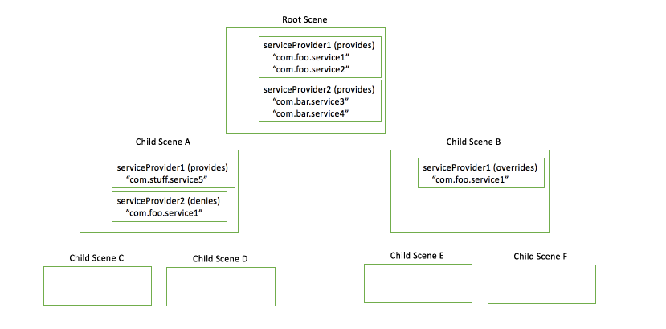

Advanced Topics
Overview
When authoring Spark applications, there are many things to consider, such as caching and bundling applications and their resources. In addition, there are many Tips and Tricks that may be helpful when getting up and running with Spark for the first time.
Shader Resource
Spark's Shader Resource provides a way to create a amazing shader effects, leveraging the GPU to render impressive visuals, as well as effects like blur or shadow.
OpenGL shaders are fully programmable - and provide near limitless possibility !!
Read more on the Shader Resource
Shader ResourceSVG Support
Spark's SVG provides a way to create a rich visual experience with either inline or small, downloadable files as an alternative to heavyweight images. In addition, it provides support for some features not covered by the Spark API, such as gradients, rounded rectangles and non-linear lines.
Read more on SVG Support
SVG SupportHTTP Caching
In Spark, downloaded HTTP image files and Javascript files are cached on the disk to avoid repetitive downloads of unmodified data. This is done to speedup processing by removing network download time of same data.
Caching mechanism:
- Default maximum cache size is 20 MB. Maximum cache size can be changed if needed.
- Default cache directory is /tmp/cache. Default cache directory can be changed if needed
- For every downloaded image/Javascript file, unique number is generated, which is used as cache file name
- Every file in cache has HTTP header and payload data. Every cache data is attached with the expiry date, based on the HTTP response field parameters
- When the maximum cache size is reached or when sufficient space for new file download is not available, oldest file in cache will be removed, to provide space for new file downloaded
- When a file (say Javascript or image file) is required in pxScene application, cache will be checked for availability. If it is available and valid, it will be retrieved and used for application.Else, new data will be downloaded,cached and returned to application
- Cache control mechanism mentioned in https://www.w3.org/Protocols/rfc2616/rfc2616-sec14.html#sec14.9 is followed.Caching is implemented based on the rules given in the specification
Cache data validation:
- HTTP header and payload is cached only if it is not expired and headers does not contain "Cache-Control:no-store" field
- When cache data is requested for reuse, below validations are done, before providing cache data to the application:
- If data in cache is expired and the cached HTTP header contains "Cache-Control:must-revalidate", cached data is revalidated by sending a new HTTP request with "Cache-Control: max-age=0" parameter. Based on server response, same cached data will be sent back to application. Or new updated data from server is stored in cache and returned back to application
- If data in cache is not expired and the cached HTTP header contains "Cache-Control:no-cache", cached data is revalidated by sending a new HTTP request with "Cache-Control: max-age=0" parameter. Based on server response, same cached data will be sent back to application. Or new updated data from server is stored in cache and returned back to application
- If data in cache is not expired and the cached HTTP header contains "Cache-Control:no-cache=<header params>", cached HTTP header fields mentioned in params alone is revalidated by sending a new HTTP request with "Cache-Control: max-age=0" parameter. Based on server response, new header fields will be updated in cache and the updated cache data will be sent back to application
- If cached HTTP header contains ETag parameter, new request is sent to server with the header option "If-None-Match:<Etag-id>".If the response from the server is 302, cached data is returned to the application. Else, new data received from server is updated in cache and provided to application
Example of Server Configuration (Apache)
Add directives to httpd.conf. The following is an example of adding cache-control response header for a specific directory. This example also turns off ETags to avoid round trips to servers.
Sample directives to add in httpd.conf on a server:
# Add cache-response headers for slice app
<Directory "/var/www/html/px_apps/slice">
ExpiresActive On
ExpiresDefault "access plus 1 day"
Header set Cache-Control "max-age=86400"
Header unset ETag
</Directory>
Service Bubbling
Service bubbling allows scenes within a heirarchy to provide services to other scenes. A parent scene can indicate that it wishes to vend a service by using the addServiceProvider(serviceProviderFunction) function. Then a scene wishing to use that service would call scene.getService(serviceName) where the serviceName is the name of the service the scene wishes to use. More details are explained below in this section.
scene supports two functions for providing service:
- addServiceProvider(serviceProviderFunction)
- removeServiceProvider(serviceProviderFunction)
A scene that wishes to provide a service must call addServiceProvider, passing it a serviceProviderFunction.
The serviceProviderFunction will be called whenever a scene in the hierarchy requests a service by name. The serviceProviderFunction must do the following:
- Accept two arguments
- serviceName: when the serviceProviderFunction is called, this will be the name of the service being requested.
- All service names should be properly namespaced
- All service names should include a version number
- Ex. com.mycompany.myService_1
- serviceContext: when the serviceProviderFunction is called, this will contain information about the scene that is requesting the service.
This gives the provider the opportunity to deny access to the service to specific requesters, as required. ServiceContext has the following properties:
- url: url is the originating URL from which the script requesting the service was loaded
- serviceContext: this is an object, that if populated, is a property bag from the requesting scene.
- permissions: TBD
- serviceName: when the serviceProviderFunction is called, this will be the name of the service being requested.
- Evaluate serviceName and serviceContext to determine if and what service should be provided
- Returns one of the following:
- Object - An object representing the service being requested
- "DENY" - the process of locating services is halted immediately. A null value will be returned from getService
- "ALLOW" - this serviceProvider can't provide the service, but will allow the search for the service to continue
A scene that has called addServiceProvider should call removeServiceProvider when it no longer wishes to vend the service or when it closing.
scene supports a function for scenes to request vended services by name:
scene.getService(serviceName)
Internally, Spark will do the following:
- Check the current scene for any service provider functions
- If a serviceProvider is found, it calls each service provider function found, passing the service name and service context
- If a service (object other than "DENY" or "ALLOW") is returned from the service provider function, the service provider function is returned from getService
- If DENY is returned from the service provider function, the search for a service is halted, getService returns null
- If ALLOW is returned from the service provider function, the search is allowed to continue
- If all service provider functions of a scene return ALLOW, the search bubbles up to the parent scene's service provider functions.
- This bubbling continues up the scene hierarchy to the root scene.
Image 1: Some possibilities with service provider functions:
- Child Scenes C + D can access service 2, 3, 4 and 5.
- Child Scenes C + D cannot access service 1, as Child Scene A denies it.
- Child Scenes E + F can access service 1, 2, 3, and 4. But service 1 will be a different implementation as provided by Child Scene B.

Application Packaging
There are several choices available when considering bundling/packaging options for your applications.
TBD